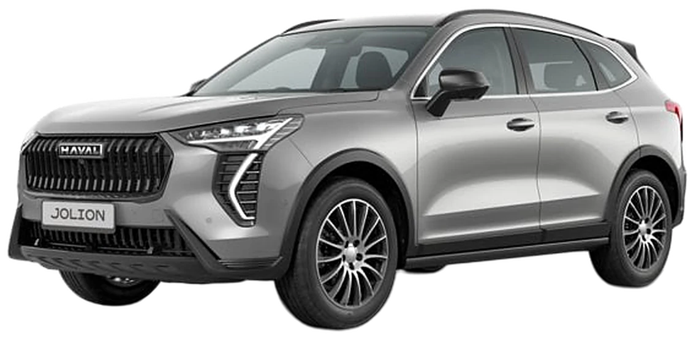

Скоро экзамен в ГАИ
Проезжаем экзаменационный маршрут, пока сложные места не станут знакомыми: перекрёстки, развороты, парковка. На экзамен вы едете по дороге, которую уже знаете.
Автоинструктор в Марьино, Москва
С 2010 года учу водить спокойно и понятно. Готовлю к экзамену в ГАИ на механике и автомате.

Я за рулём 30 лет и 16 из них учу водить других. 213 учеников оставили отзывы на Профи.ру, средняя оценка 4,95.
Проезжаем экзаменационный маршрут, пока сложные места не станут знакомыми: перекрёстки, развороты, парковка. На экзамен вы едете по дороге, которую уже знаете.
Добираем практику, которой не хватило. В вашем темпе и с разбором каждой ошибки.
Находим, на чём именно вы срезались, и отрабатываем это место.
Перестроения, перекрёстки, плотный поток. Ситуации, которые встречаются каждый день.
Трогаемся, паркуемся, привыкаем к машине там, где нет потока.
Одно занятие длится 60 минут. Обстановка спокойная: ошибаться можно, для этого занятие и нужно.
Вы рассказываете, что нужно: экзамен, площадка или город. Выбираем машину и время.
На первом занятии вижу ошибки и привычки, которые мешают, и сразу о них говорю.
Для сложных ситуаций даю понятный порядок действий. Повторяем, пока не начнёт получаться само.
К этому дню маршрут знаком, а ошибки разобраны. Остаётся проехать так же, как на занятиях.
Во всех машинах дополнительные педали и зеркала, гидроусилитель руля и кондиционер.
Механика
2000 – 3000 ₽
за 60 минут
Jolion на механике — редкая для учебной машины комплектация.
Автомат
2000 – 4000 ₽
за 60 минут
Механика
1700 – 2500 ₽
за 60 минут
Консультация по вождению на механике — 1000 ₽ за час.
Точная цена зависит от задачи и формата занятия. Назову её по телефону.
4,95
средняя оценка из 5
| 5 | 207 | |
|---|---|---|
| 4 | 2 | |
| 3 | 3 | |
| 2 | 1 | |
| 1 | 0 |
213 отзывов на Профи.ру. Перед публикацией сервис проверяет каждый отзыв на подлинность.
«Спокойно, без давления делает из курсанта уверенного водителя».
Ученики, инструктор и учебные машины
Ученики с полученными правами
Меня зовут Олег Васильевич. Я за рулём с 1996 года, а с 2010-го учу водить других.
На занятиях передаю то, что накопил за эти годы: разбираем разные дорожные ситуации, чтобы вы управляли машиной уверенно, правильно и, главное, безопасно.
Два диплома о профессиональной переподготовке 2026 года. Нажмите на документ, чтобы рассмотреть его.
Да. Многие приходят после автошколы на несколько занятий: проехать экзаменационный маршрут и убрать ошибки.
Зависит от того, с чего начинаем и что нужно в итоге. После первого занятия скажу, сколько, на мой взгляд, потребуется.
На выбор: Haval Jolion на механике или автомате либо Nissan Almera на механике. Во всех машинах есть дополнительные педали инструктора.
60 минут.
В Марьино, на юго-востоке Москвы. Место встречи согласуем по телефону.
Нет, с этим приходят многие. Начинаем там, где вам спокойно, и двигаемся дальше в вашем темпе.
Позвоните, и договоримся о времени, машине и месте встречи.
+7 985 216-37-34Можно написать и через профиль на Профи.ру.